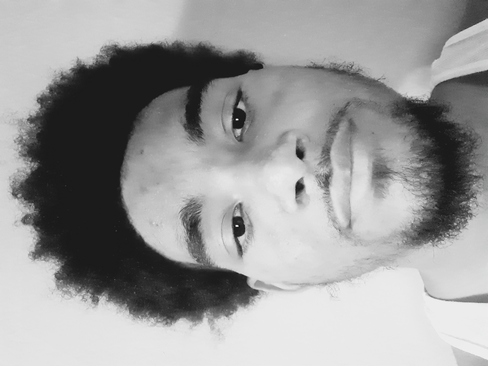

Good even, my Name is Jayden Cartwright, and this is my second year as a freshman at Hunter College. The major I have selected and am currently looking forward to fulfilling is Emerging media, and the reason for picking this major is because I am huge fan of arts. There are so many ways that people are able express their full creative potential through each medium of art, whether it's painting, sculpting, sewing, etc. But the one form of art I'm truly passionate about is animation. As you already may know animation is a form of creative expression in which you're able to make the art piece you've sketched out come to life on the big screen through technological advances.
Every day I'll scroll through YouTube to find a unique piece of animation that someone made to show off their true talent as an artist, and what they're capable of doing. Watching these animations fills my head with ideas for my own animated projects. This is the reason why I want to become an animator so I can make those ideas reality. However, if I want to turn these dreams into a reality, I will need to learn the basics of computers to edit and put these ideas together. The reason I am taking this class is that I can learn how to work with computer software that can move and properly animate the art pieces I've made. The work that I create is a way of expressing the ideas and aspirations I have building up in my head, so people can see my true artistic potential.
